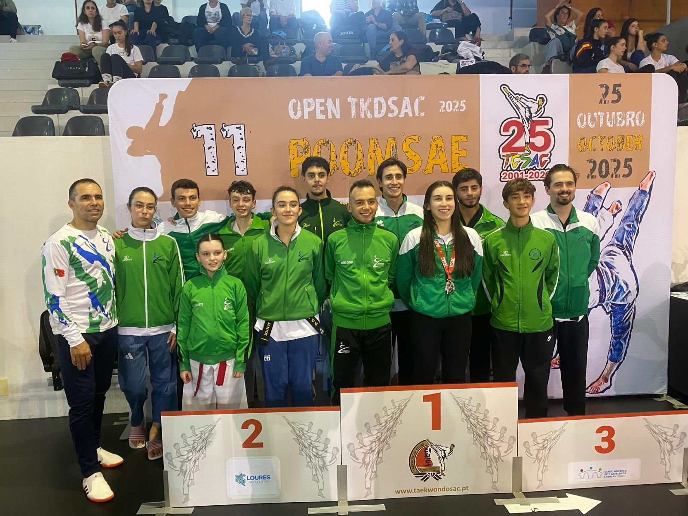
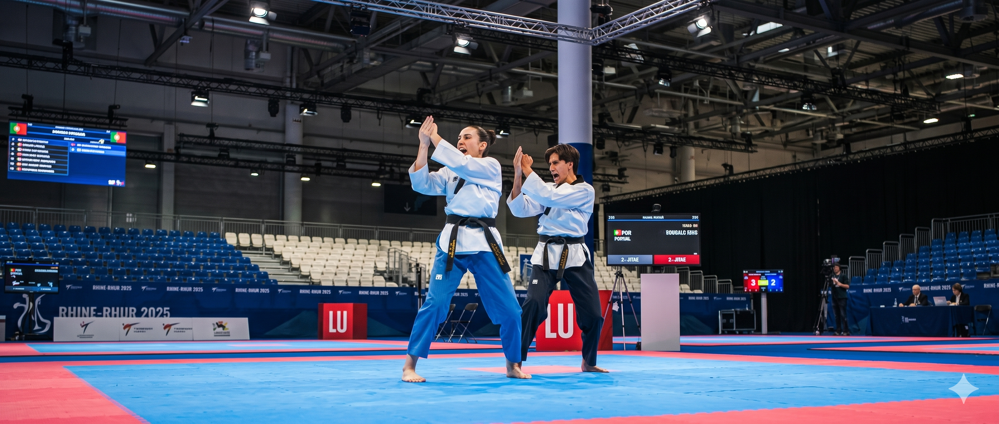
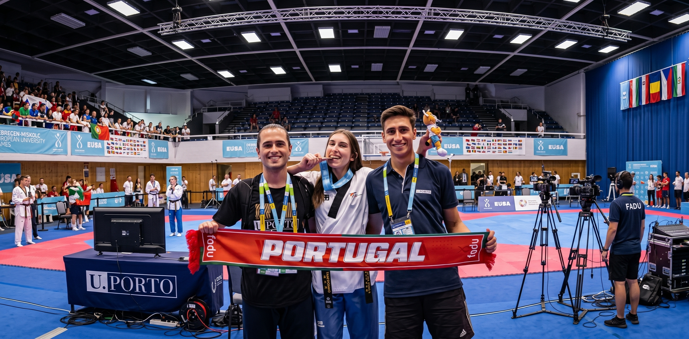
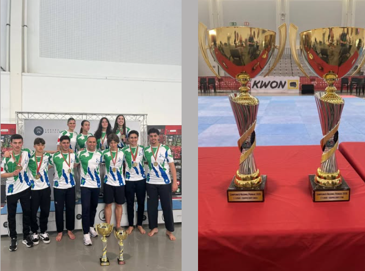
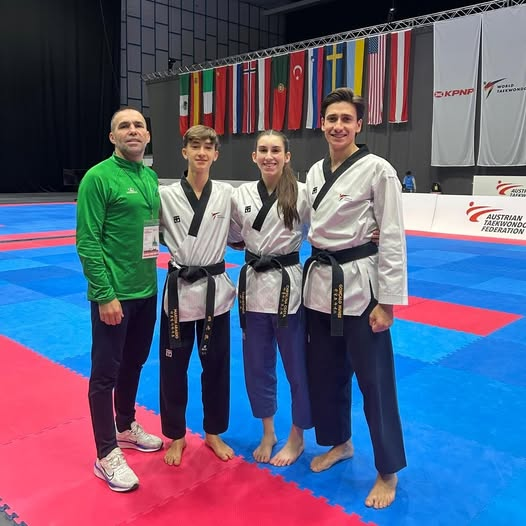
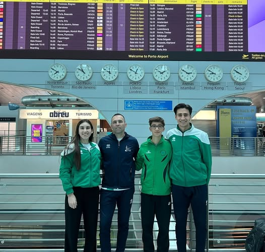

ATCV - Taekwondo Costa Verde

Descobre a arte marcial que combina disciplina, respeito e força. Junta-te à nossa comunidade e transforma o teu corpo e mente.
Sobre nós

A ATCV - Taekwondo Costa Verde é um clube desportivo dedicado ao ensino e prática do taekwondo, uma arte marcial coreana reconhecida mundialmente pela sua técnica, disciplina e valores.
O clube acolhe praticantes de todas as idades e níveis de experiência. Na ATCV, o taekwondo é mais do que um desporto: é uma filosofia de vida que ensina respeito, disciplina, perseverança e autocontrolo.
Resultados dos atletas

Os nossos atletas representam o clube com dedicação e espírito de superação em cada competição.
- Mais de 15 anos de história
- Mais de 200 atletas ativos
- Mais de 50 medalhas
Notícias e eventos
Campeonato Nacional Taekwondo Poomsae 2026

Campeões Nacionais Dan Masculinos e Campeões Nacionais Dan Femininos.
President's Cup - Áustria 2025

Realizou-se no fim de semana de 29 e 30 de novembro a edição da Taça do Presidente-Europa. O nosso clube esteve presente com 3 atletas em 4 categorias nesta prova G3 de ranking mundial.
Seleção nacional na President's Cup

Os atletas do nosso clube representaram Portugal neste evento internacional.